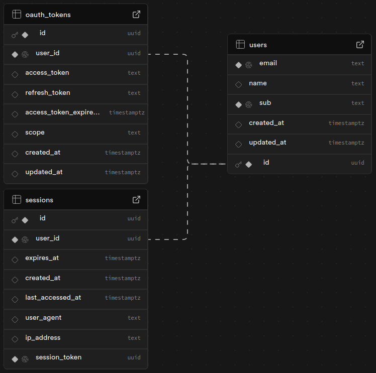
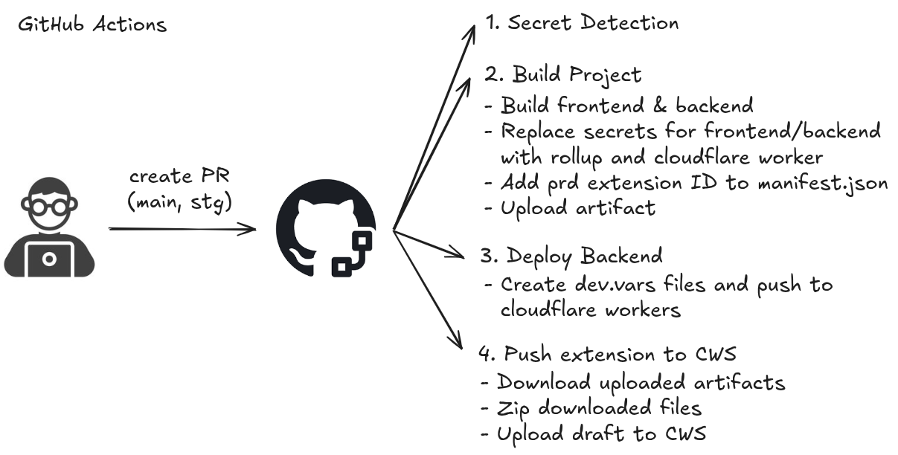

Developer Documentation 📚
Everything you need to understand, set up, and contribute to Schedulr.
Prerequisites
You should be familiar with or have a basic understanding of:
System Architecture
The diagram below shows the high-level system architecture of Schedulr:

Project Structure
schedulr/
├── backend/ # Backend code
│ ├── cloudflare-workers/ # Cloudflare Worker API
│ │ ├── dist/ # Built output files
│ │ ├── src/
│ │ │ ├── index.ts # Main Worker entrypoint
│ │ │ └── lib/ # Reusable helper functions
│ │ ├── .dev.vars # Dev environment secrets
│ │ ├── .dev.vars.prd # Production environment secrets
│ │ └── wrangler.jsonc # Wrangler config
│ └── db/ # Database schema & migrations
├── docs/ # This website
├── frontend/ # Chrome extension client code
│ ├── dist/ # Built extension files
│ └── src/
│ ├── backgrounds/ # Service worker scripts
│ ├── popup/ # Extension popup UI
│ └── scripts/
│ ├── auth/ # OAuth authentication flow
│ ├── calendar/ # Google Calendar integration
│ ├── scraper/ # CliC timetable scraper
│ └── utils/ # Shared utilities
├── images/ # Project images & diagrams
├── rollup.config.js # Bundler config
├── Makefile # Build shortcut commands
├── manifest.json # Extension manifest (MV3)
└── package.json # Root package configProgram Flow
The sequence diagram below illustrates both the authentication and calendar import processes:

Entity Relationship Diagram
In this schema, each account is treated as a separate user even when logged in from the same IP.
Table relationships:
- users → oauth_tokens (one-to-one): each user holds one OAuth token
- users → sessions (one-to-one): each user holds one active session
Note: Each user can only have one oauth_tokens and sessions
record because the program upserts (overwrites) the previous token and session on each login.
See backend/db/schema.sql for table definitions.
Secret Management
Project secrets are stored as GitHub Secrets and injected as environment variables during the build process via GitHub Actions. Never commit secrets to the repository.
Build Process
Building and deploying is handled by GitHub Actions:
Getting Started
Note: This guide is based on Google Chrome. Some steps (especially
manifest.json format) may not apply directly to other browsers — refer to their documentation
as needed.
1. Clone the repository
git clone https://github.com/sycanz/schedulr
cd schedulr2. Load the extension into Chrome
- Open Chrome and navigate to
chrome://extensions/ - Enable Developer mode (toggle in the top right)
- Click Load unpacked and select the cloned repository
- Note the Extension ID (Item ID) — you'll need it for the Google OAuth redirect URI
3. Set up Google Calendar API
- Create a new project in the Google Cloud Console
- Enable the Google Calendar API
- Create OAuth 2.0 credentials (Web application type) and add the authorised redirect
URI:
https://<YOUR-EXTENSION-ID>.chromiumapp.org/oauth - Copy the Client ID and Client Secret
4. Set up the development environment
- Install all dependencies from the root directory:
npm run setup - Create a
.envfile in the root directory (frontend secrets):# Refer to .env.example for required variables cp .env.example .env - Create a
.dev.varsfile in backend/cloudflare-workers/ (backend secrets):cp backend/cloudflare-workers/.dev.vars.example backend/cloudflare-workers/.dev.vars
Development Tips
Backend (Cloudflare Workers)
There are two ways to develop and test the Cloudflare Worker:
Local development (recommended for dev)
- In terminal 1 (project root):
npm run watch:scraper— watches for file changes - In terminal 2 (backend/cloudflare-workers/):
npm run dev— starts the Worker locally
Note: Set the CFW endpoint to http://localhost:8787 in your
.env when using local dev.
Push to dev / production environment
- Authenticate:
npx wrangler login - Deploy with Makefile shortcuts:
make deploy-dev # deploy to dev environment make deploy-prd # deploy to production
Note: You need to re-run the deploy command after each change to update the remote Worker.
Git Hooks (pre-commit)
Husky is configured to automatically run on every commit:
- Formats code with Prettier
- Lints code with ESLint
Manual execution
npm run lint— run ESLintnpm run lint:fix— run ESLint and auto-fixnpm run prettier— run Prettiernpm run prettier:fix— run Prettier and auto-fix
Tech Stack 🚀
Contributing 🤝
Schedulr is open-source and welcomes contributions! Check out the contribution guidelines to get started. Bug fixes, feature requests, documentation improvements, and code contributions are all welcome.